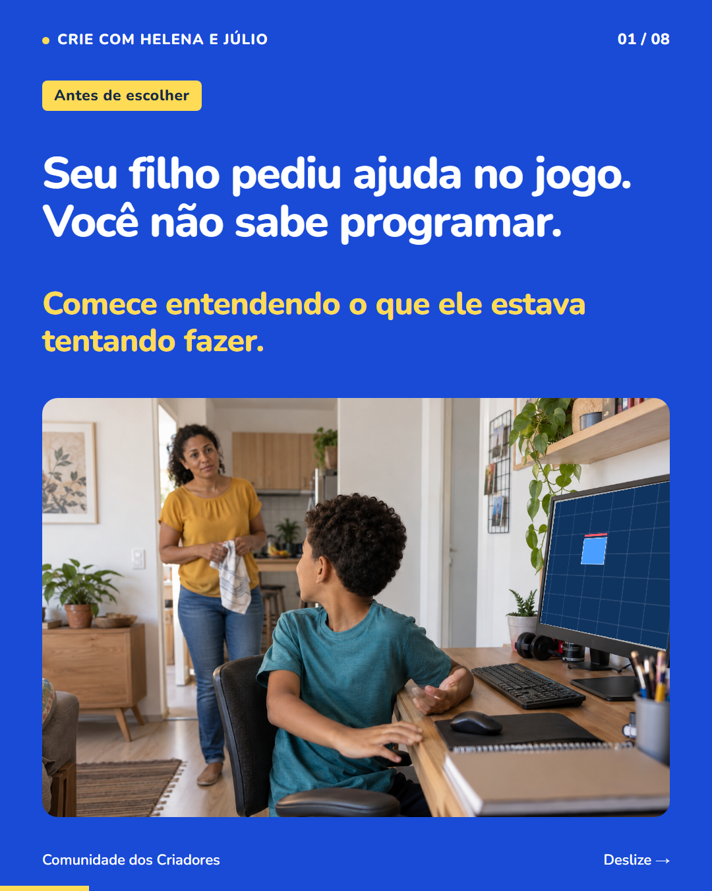
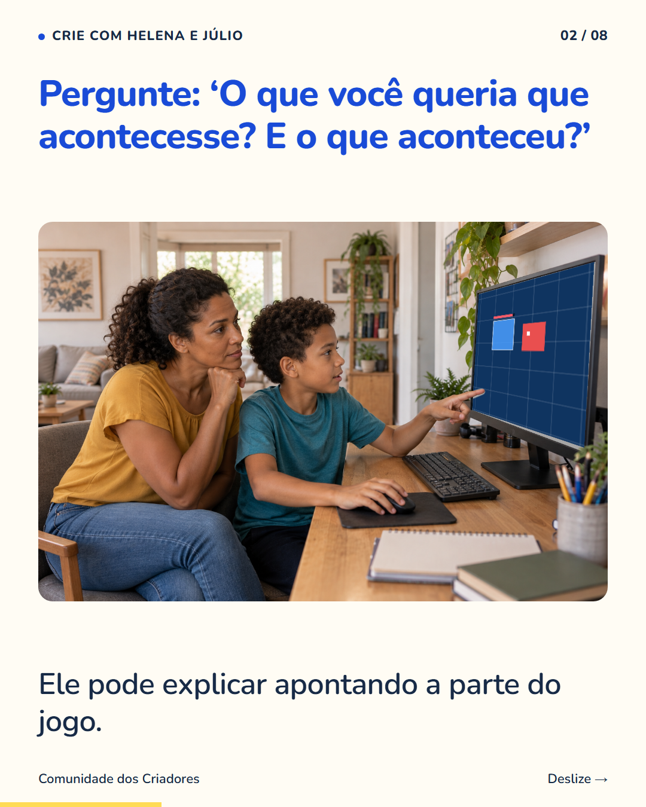
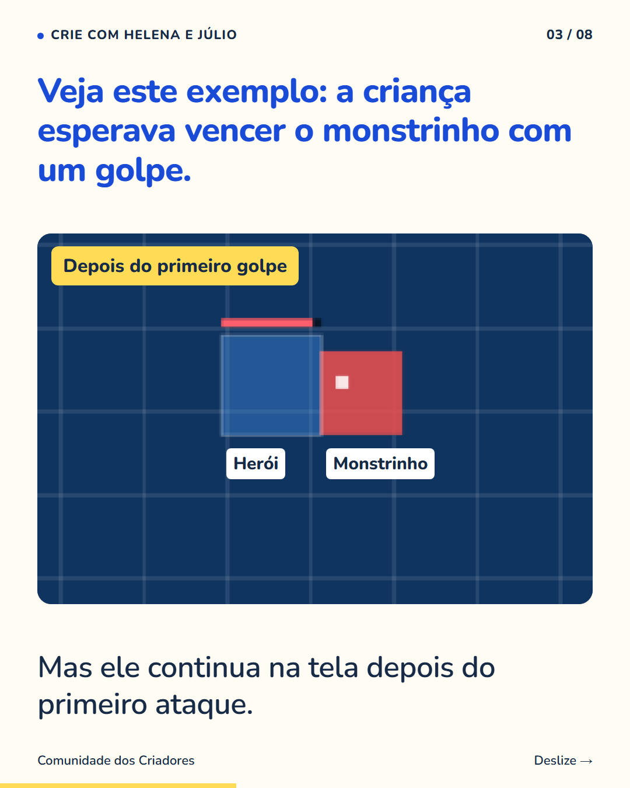
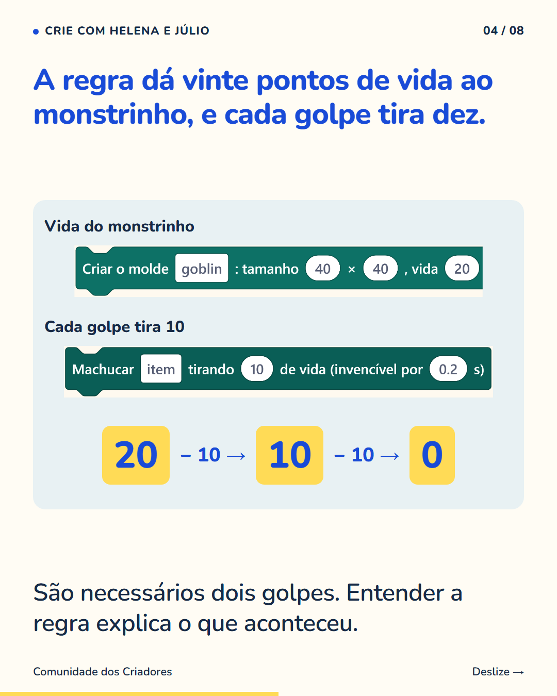
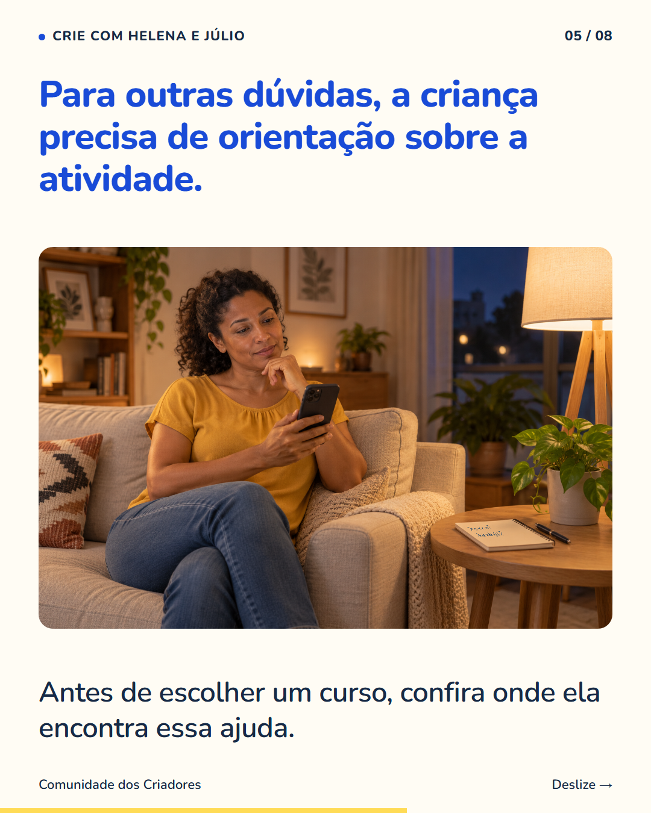
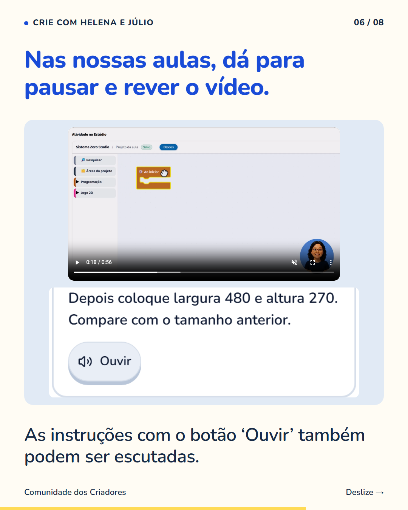
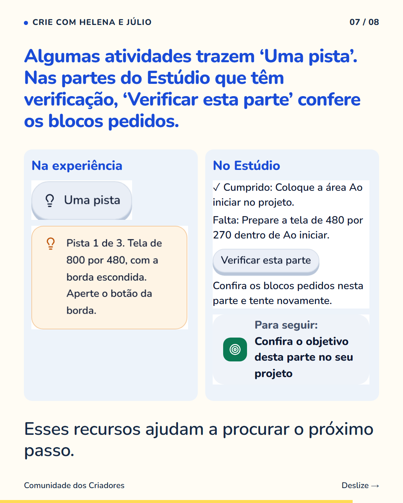
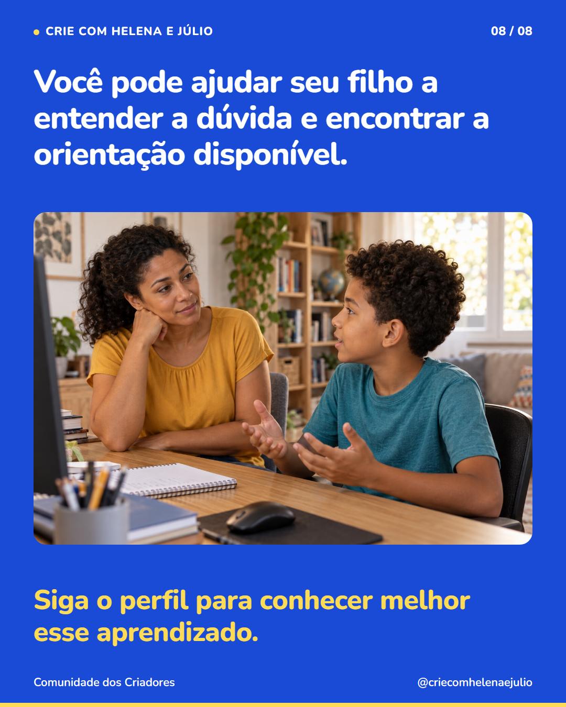

8 slides · 1080 × 1350 · Copy revisada · Conversa, regra do jogo e recursos de orientação








Você pode começar a ajudar pedindo que seu filho mostre o que aconteceu. Às vezes, a dúvida está numa regra: ele esperava vencer com um ataque, mas o personagem foi programado para resistir a dois. Em outras, falta entender uma instrução ou encontrar a ferramenta certa. Por isso, vale conhecer os recursos de orientação da atividade. Nas nossas aulas, é possível rever vídeos, ouvir instruções e, conforme a parte, consultar pistas ou conferir os blocos pedidos. A verificação daquela tarefa não avalia tudo o que um jogo pode fazer. Siga o perfil para conhecer formas de acompanhar seu filho enquanto ele cria.